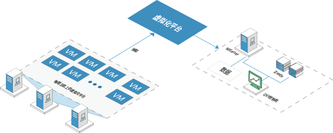
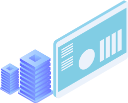
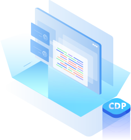
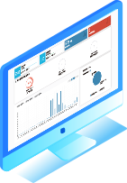

产品概述

i2VP 虚拟化备份软件，实现虚拟机的批量备份和恢复，在虚拟机内部或虚拟化底层无须安装任何代理程序。在虚拟化环境下， 由于涉及部门多、系统数量多，使用传统的备份客户端进行部署和保护的灾备策略无疑增加了管理复杂度和运维成本。无代理的虚拟化备份方案最显著的特点就是不需要在业务生产系统上部署任何软件，同时又能满足统一管理、集中监控的运维需求。
产品特点
虚拟机保护
支持正向增量 / 反转增量等备份方法 ;LAN-free 方式备份 ;NFS 直接访问，可通过基于文件的 (NFS) 主存储中直接备份 ; 还支持即时恢复、计划恢复重建虚拟机。

虚拟机迁移
支持迁移虚拟机主机、迁移虚拟机的数据存储 , 和跨站点迁移虚拟机 ; 支持以宿主机或虚拟化平台为单位进行备份 ; 支持灾备服务器端数据的压缩。

支持连续作业
支持连续作业计划，以达到接近于 CDP 的保护。

图形化界面
B/S 架构，全图形化监控、管理、备份、恢复和统计 ; 提 供统计，显示成功率、保护率、异常信息以及提供备份任 务历史数据。
产品概述
虚拟机备份
虚拟机恢复
搭建业务测试环境
兼容性列表
ESXi5.5、ESXi6.0、ESXi6.5、ESXi6.7